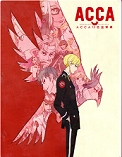
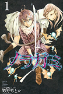

ACCA13区监察课
MADHOUSE
存在于分为13个自治区的王国中的，巨大统一组织“ACCA”。由于过去的政变危机而结成的ACCA，已持续守护了国民的和平百年之久。ACCA本部监察课副课长吉恩·奥塔斯，是个有着“蹭烟的吉恩”这一绰号的、组织里头号难对付的男人。他一边漫不经心地抽着烟，一边走遍13区进行对不法行为的视察。盯上这样的吉恩的视线、危险的传闻以及——点心时间。 吉恩的和平日常，慢慢被卷入世界的阴谋！
家庭教师
ARTLAND
本片是围绕彭格列第十代首领泽田纲吉与其家族成员的成长而展开的。彭格列初代后裔泽田纲吉是一个做什么都不行的“废柴纲”，但是为了培养成为彭格列家族首领，从意大利来了的里包恩负责教导纲吉。内心善良的他不愿意伤害别人，但他为了保护同伴而开始承担起责任，成长为一名优秀的首领。
犬夜叉
读卖电视台、SUNRISE舞台设定
《犬夜叉》是根据日本漫画家高桥留美子所著同名作品改编的电视动画，故事讲述半妖少年——犬夜叉和穿越时空的少女——日暮戈薇，以及法师弥勒、驱魔师珊瑚、叉尾妖猫云母、小狐妖七宝一同对抗死敌奈落，并四处寻找四魂之玉碎片的冒险经历。

野良神
安达渡嘉
该故事描述的是在人间与阴间的交界处，八百万的神明和服侍他们的死灵——神器，以及被称为妖的魑魅魍魉一同生活着。可爱的女中学生在那儿遇到了居无定所、没有工作、自称是“神”的穿着运动衫的人。像这样一个性格粗心大意、性情不定，而且不能很好地听祈愿、没有人知道的神明却有一个能力，那就是将此岸与彼岸以及其夹缝——世上各种琐碎的东西斩断。
鬼灭之刃
吾峠呼世晴
大正时期，日本。心地善良的卖炭少年·炭治郎，有一天他的家人被鬼杀死了。而唯一幸存下来的妹妹——祢豆子变成了鬼。被绝望的现实打垮的炭治郎，为了寻找让妹妹变回人类的方法，决心朝着“鬼杀队”的道路前进。人与鬼交织的悲哀的兄妹的故事，现在开始！
世界第一初恋
中村春菊
主人公小野寺律在高中时一直暗恋着嵯峨前辈，虽然下定决心要把喜欢的心情隐藏起来，但在一次偶然的机会下，他还是不小心向嵯峨前辈表白了。由于一个小鬼遮羞的小动作，使双方都误会了对方。十年过去了，小野寺已经完全成长为一个糟糕的大人了，他被分配到丸川书店少女漫画部当编辑，但这份工作却并不合他的胃口，而且上班第 一天就被上司高野先生训斥。其实高野先生就是小野寺高中时一直暗恋的嵯峨前辈。他在高三的时候因为父母离异而改了姓氏，而小野寺律却没有认出他来小野寺因为初恋的失败而不再相信初恋会有结果这种神话，高野政宗却自信满满地说出：我会让你再次喜欢上我的！觉悟吧！